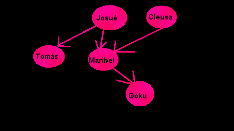

Dado um par de conjuntos V e A, onde
Um grafo é regular quando todos os seus vértices tem o mesmo grau.
Um grafo é completo quandoo há uma aresta entre cada par de seus vértices. Estes grafos são designados por Kn, onde n é a ordem do grafo.
Um grafo Kn possui o máximo possível de arestas para um dado n. Ele é, também regular - (n-1), pois todos os seus vértices tem grau n-1.
Dado o grafo definido por:
Essa relação é não simétrica ,
resultando em uma orientação no grafo. Esse tipo de
grafo é dito grafo orientado ou
digrafo , onde as conexões entre
vértices são chamadas de arcos.

Um grafo é dito bipartido quando seu conjunto de vértices V puder ser particionado em dois subconjuntos V1 e V2, tais que toda aresta de G une um vértice de V1 a outro de V2
Um grafo é bipartido completo se todos os vértices de uma partição estão ligados a todos os vértices da outra partição
A ordem de um grafo G é dada pela cardinalidade do conjunto de vértices (número de vértices).
Em um grafo simples, dois vértices v e w são
adjacentes (ou vizinhos) se há uma aresta a=(v,w) em G.
Essa aresta é
Se o grafo for dirigido, a adjacência é especializada em:
O grau de um vértice é dado pelo número de arestas que lhe são incidentes.
No caso de digrafos, a noção de grau é especializada em:
Um vértice v é fonte se seu grau de recepção é nulo.
Um vértice v é sumidouro se seu grau de emissão é nulo.